Chapter 44 Website Sharing Whole Class and 2nd-part of the Website – Mosaic Plot Translation to Chinese
Hanxiao Zhang and Lei Guo
We’re trying to create a web site for sharing class resources publicly. In order to give the audiences an overall knowledge of EDA, our website includes the following three parts:
44.1 Three Parts of Our Website
1. Course Slides * We would give a brief introduction to each topics of EDA and provide the slides for further self-learning)
2. Specific Topic Tutorial * We are translating the external resources on Mosaic plot topic)
3. A Reading List * We would include the recommended reading materials for students to learn certain topics in depth). We have complete the general design of the website and would include more topics during the rest of the semester.
44.2 Links of All Parts of Website
- Link to our website: https://leiguolg.wixsite.com/5702 ** The .Rmd and .html files for the 2nd part of our website rpub are also available on the button called “.Rmd and .html files” on the 2nd page of our website named “Specific Topic – Mosaic plot”. These two files can be downloaded through google drive.
- Link to translated tutorial: https://rpubs.com/hz2660/Mosaic-plot
- Link to Excel file: resources/website_sharing_whole_class_mosaic_plot_translation/MusicIcecream.csv
44.3 Codes of 2nd-part of Website
- The .Rmd is available on this Github branch named “Translation-Rcode”
44.3.1 Note for the Available Code
We used the “Wix” SaaS to generate a website that for sharing class resources publicly, where the code of building the website is not included in the Github since the website is created by “Wix” platform And we include here . This is the second part of our website, which is a specific topic .Rmd tutorial (we are translating the external resources on Mosaic plot topic).
Since we didn’t write the code for the Wix website excluding the 2nd part of the website that we wrote with .Rmd, we only include the 2nd part in the Github.
For graders and Professor: this document is intended as a tutorial in Chinese on the content of Mosaic plots with R. We combined texts from three websites, wiki, Mosaic plots with ggplot2 (https://cran.r-project.org/web/packages/ggmosaic/vignettes/ggmosaic.html) and the Chart: Mosaic section on edav.info.
We hope this document can effectively jumpstart any user (with limited language background to Chinese) with sufficient skills to assess Mosaic plots with R.
44.3.2 This document is outlined as follows:
- We first introduce the defination of the mosaic plot and its usage: what mosaic plots are, what features they have, what aesthetics they have. (This section is adapted from wiki website)
- We then describe in detail what the basic parts of plots are. (This section is adapted from edav.info)
- Finally, we walked through the conditions representation in mosaic plots, multiple variables in mosaic plots, and orders of variables from Mosaic plots with ggplot2.
44.3.3 Introduction 介绍 (Mosaic plot 2019)
马赛克图(也称马里梅科图)是一种将两个或两个以上定性变量进行可视化的统计报告图[1]，它是自旋图的多维扩展，自旋图只对一个变量的信息进行展示[2]。它给出数据的整体概况，并让识别变量之间的关系更加简单。例如，当不同类别的方框都具有相同的面积时，表示变量之间是独立的[3]。Hartigan和Kleiner于1981年创建了马赛克图，Friendly于1994年对其进行了扩展[4]。由于马赛克图很像马里梅科印刷品，因此也被称为梅科图。这是非常好的进行定性变量数据可视化的方式之一。
与柱状图和自旋图一样，每个方框的面积，与该类别内的观测值数量成正比[5]。
44.3.4 Basic Parts of Mosaic Plots
本页是一个正在进行中的工作。我们感谢您的任何意见。如果你想帮助改善这个页面，请考虑向我们的repo贡献。
44.3.4.1 综概
library(readr)
library(vcd)
df = read_csv("resources/website_sharing_whole_class_mosaic_plot_translation/MusicIcecream.csv")马赛克图需要一些时间来学习如何进行正确的阅读和绘制。特别是在刚开始的时候，我们建议循序渐进的学习绘制：先从划分一个变量开始，然后每次添加一个其他的变量。完整的马赛克图会对每个变量都进行一次拆分。
需要注意：如果你的数据有一个列是频率，就像下面的例子一样，计数列必须称为Freq。(表格Tables和矩阵matrices也可以使用，更多细节请参见?vcd::structable。)
还要注意的是：所有这些图都是用vcd::mosaic()绘制的，而不是用R里的基本函数包mosaicplot()。
44.3.4.2 数据如下。
## [90m# A tibble: 8 x 4[39m
## Age Favorite Music Freq
## [3m[90m<chr>[39m[23m [3m[90m<chr>[39m[23m [3m[90m<chr>[39m[23m [3m[90m<dbl>[39m[23m
## [90m1[39m old bubble gum classical 1
## [90m2[39m old bubble gum rock 1
## [90m3[39m old coffee classical 3
## [90m4[39m old coffee rock 1
## [90m5[39m young bubble gum classical 2
## [90m6[39m young bubble gum rock 5
## [90m7[39m young coffee classical 1
## [90m8[39m young coffee rock 044.3.4.3 划分变量

44.3.4.3.2 先按年龄划分，再按照音乐。
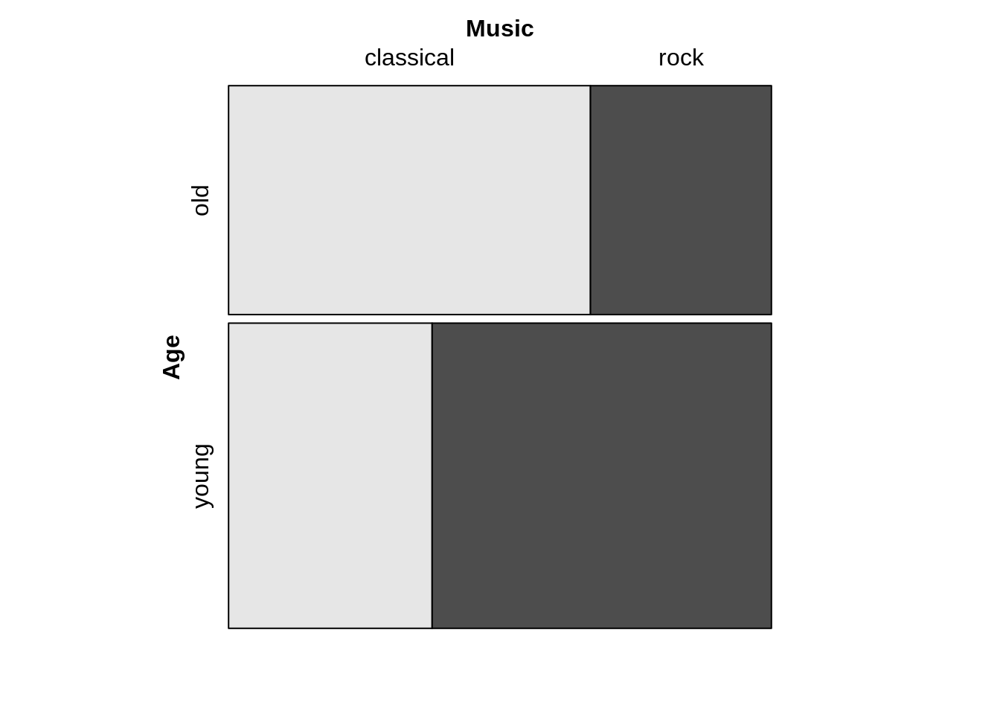
需要注意的是，第一组在“年轻”和 “年长”中拆分，第二组拆分则将每个年龄段的人按照“古典”和 “摇滚”进行再次划分。
44.3.4.4 划分的方向
请注意，在前面的例子中，分割的方向如下。
44.3.4.4.1 年龄–横向分割
44.3.4.4.2 音乐–垂直分割
44.3.4.4.3 最喜欢的–横向分割
这是默认的方向模式：交替方向从水平方向开始。因此，我们得到如下同样的图：

可以根据需要改变方向。例如，要创建一个doubledecker图，除了最后一个变量，所有的分割都是垂直的。
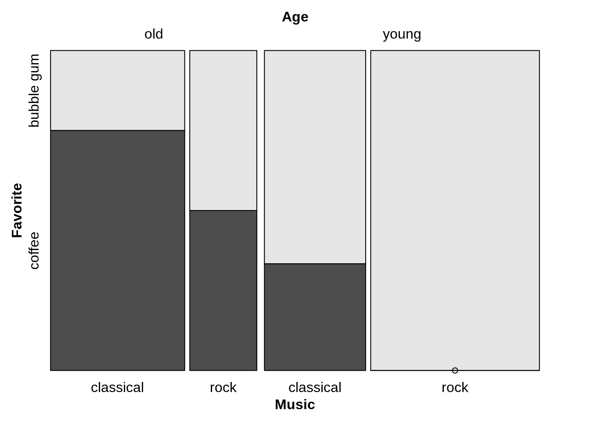
需要注意的是，方向向量是按照拆分的顺序（年龄、音乐、喜爱），而不是按照公式中变量出现的顺序。在公式中，最后一个要拆分的变量要在”~”前先列出来。
44.3.4.5 填充颜色
填充颜色的分类是根据最后划分的维度——即因变量（本例中最喜欢的冰淇淋口味）。(如果不能正常运行，请更新到vcd的最新版本。)
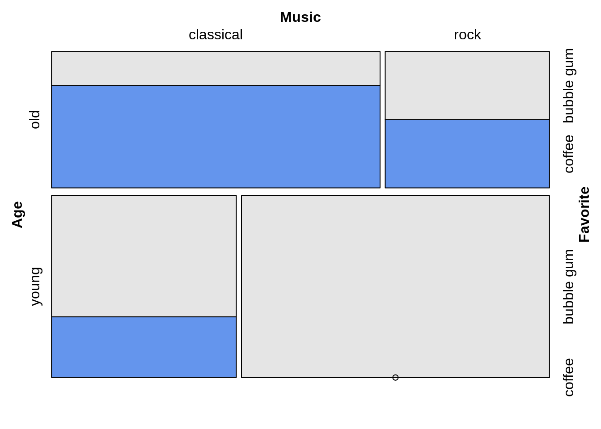
44.3.4.6 标签
想要看关于标签选项的官方文档，请参见Strucplot框架中关于标签的说明。
44.3.4.7 单元间距
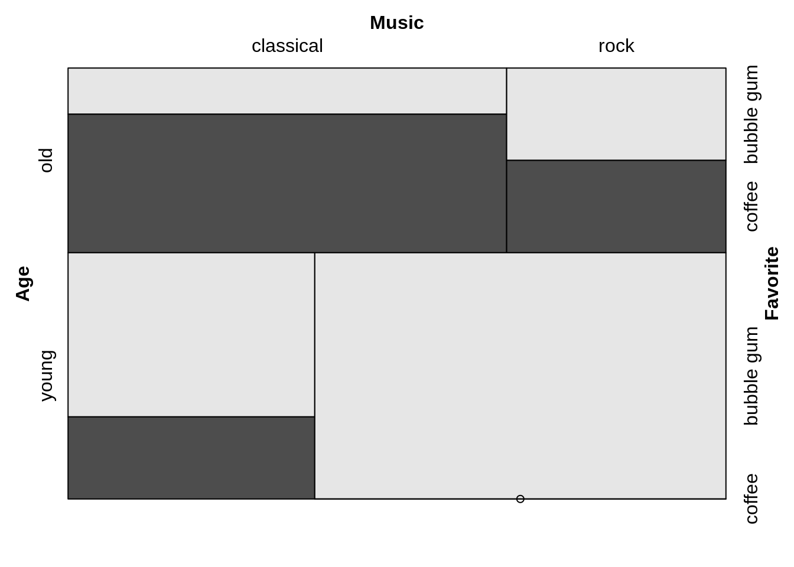
想看更多细节, 请看 >?vcd::spacings
44.3.4.7.1 使用vcd::doubledecker中的 Mosaic
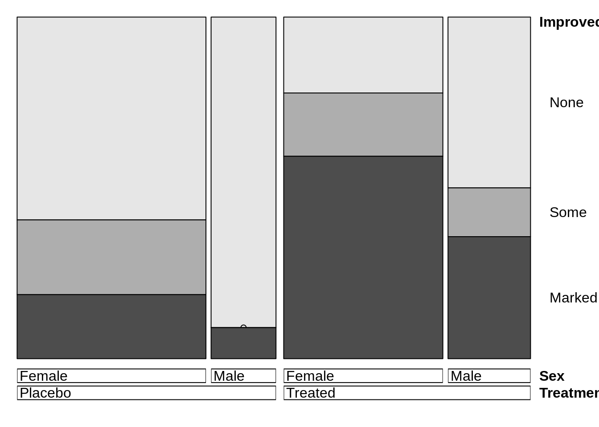
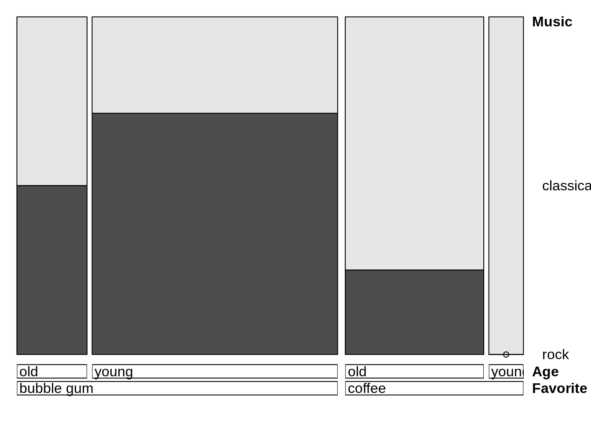
44.3.4.7.2 使用ggplot中的马赛克图
要在ggplot2框架中创建马赛克图，请使用ggmosaic包中的geom_mosaic()。
https://cran.r-project.org/web/packages/ggmosaic/vignettes/ggmosaic.html
44.3.4.8 理论
44.3.4.9 何时使用
当您想查看多个分类变量之间的关系时，请注意以下几点
44.3.4.10 考虑因素
44.3.4.10.1 标签
在马赛克图中，当有很多维度时，标签的可读性可能会较差。这可以通过以下方法来缓解： - 缩写名称 - 旋转标签。
44.3.4.10.2 纵横比
长度比面积更容易判断，所以尽量使用相同宽度或高度的矩形。
更高更瘦的矩形判断效果更好（因为我们更擅长区分长度而不是面积）。
44.3.4.10.3 矩形之间的间隙
- 无间隙=最高效率
然而，间隙可以帮助提高可读性，所以请尝试不同的组合。
可在划分处有间隙
可以在层次结构中改变间隙大小。
44.3.4.10.4 颜色
对细分小组中的比率有好处
显示残余（residual）
强调特定群体
44.3.4.11 其他资源
安东尼-尤文的《用R进行图形数据分析》第七章
本文第三部分（见以下详细内容）
44.3.5 Part 3
44.3.5.1 ggmosaic的基础知识
用于分类数据的可视化。
可以生成条形图、堆叠条形图、马赛克图和双层图。
图是分层构造的，所以变量的排序是非常重要的。
集成在ggplot2中的geom里，允许分面(facetting)和分层(layering)。
44.3.5.2 创建gmosaic
ggmosaic主要是使用ggproto和productplots包创建的。
ggproto能够让你在自己的包中扩展ggplot2。
使用了productplots包中的数据处理方法。
为了绘制geom，需要计算xmin、xmax、ymin和ymax。
44.3.5.3 ggplot2的缺陷
ggplot2不能处理总体数量在变化的变量群。
目前的解决方案：写成x=product(x1，x2)来同时读入变量x1和x2。
product函数。
是为了wrapper list而设计的函数。
允许它通过代码检测。
这些限制也会导致标签的问题，但这些都可以手动修复。
44.3.5.4 geom_mosaic：设定规则。
规则如下：
weight：选择一个权重变量
x：选择要添加到公式中的变量
写为x = product(x1, x2, …)
fill : 选择一个要填充的变量
如果变量没有在x中被调用，它将被添加到公式的首位。
conds : 选择一个变量作为条件
写为conds = product(cond1, cond2, …)
然后通过productplots函数发送这些值，以创建所需分布的公式。
## weight ~ fill + x | conds44.3.5.4.1 从规则到代码
如何写成代码
weight=1
x = product(Y, X)
fill=W
conds = product(Z)
这些美学设置了分配的公式。
44.3.5.4.2 1 ~ X
library(ggplot2)
library(ggmosaic)
library(gridExtra)
ggplot(data = fly) +
geom_mosaic(aes(x = product(RudeToRecline), fill=RudeToRecline), na.rm=TRUE) +
labs(x="Is it rude recline? ", title='f(RudeToRecline)') 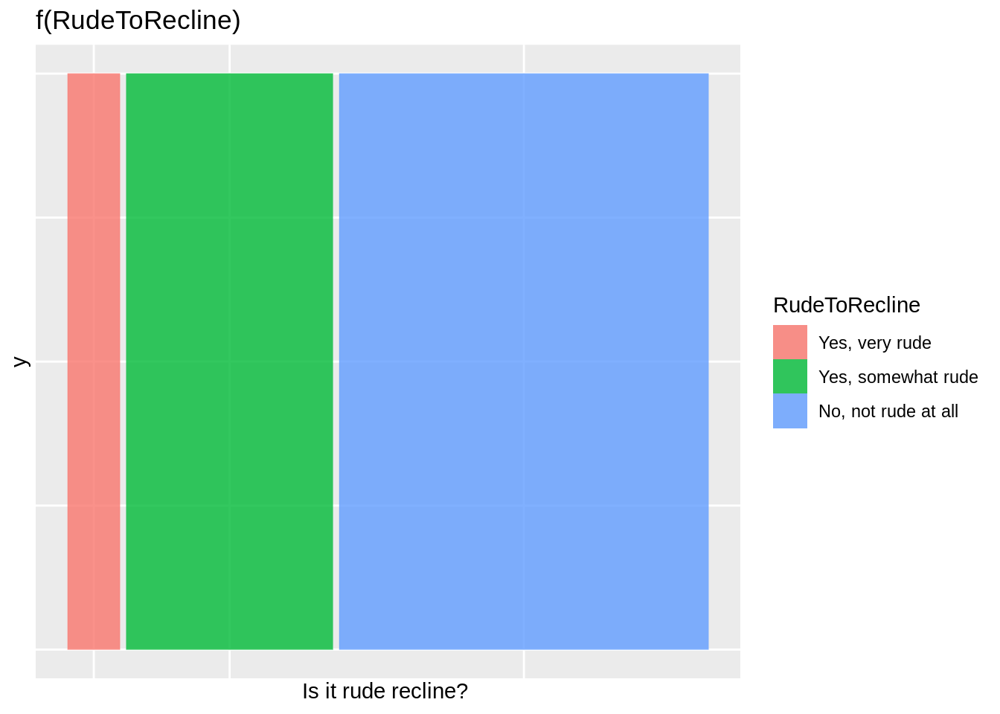
44.3.5.4.3 1 ~ Y + X
ggplot(data = fly) +
geom_mosaic(aes(x = product(DoYouRecline, RudeToRecline), fill=DoYouRecline), na.rm=TRUE) +
labs(x = "Is it rude recline? ", title='f(DoYouRecline | RudeToRecline) f(RudeToRecline)')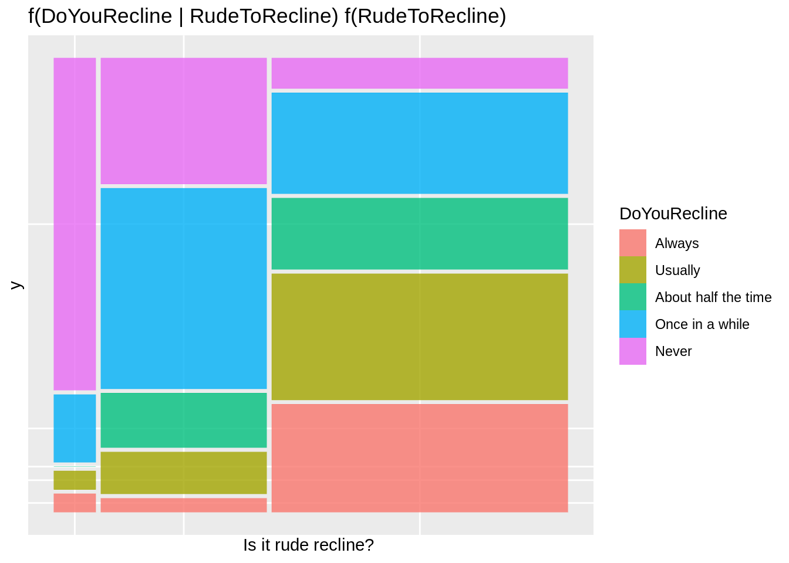
44.3.5.5 Importance of ordering
ggplot(data = fly) +
geom_mosaic(aes(x = product(DoYouRecline, RudeToRecline), fill=DoYouRecline), na.rm=TRUE) + labs(x = "Is it rude recline? ", title='f(DoYouRecline | RudeToRecline) f(RudeToRecline)') + theme(plot.title = element_text(size = rel(1)))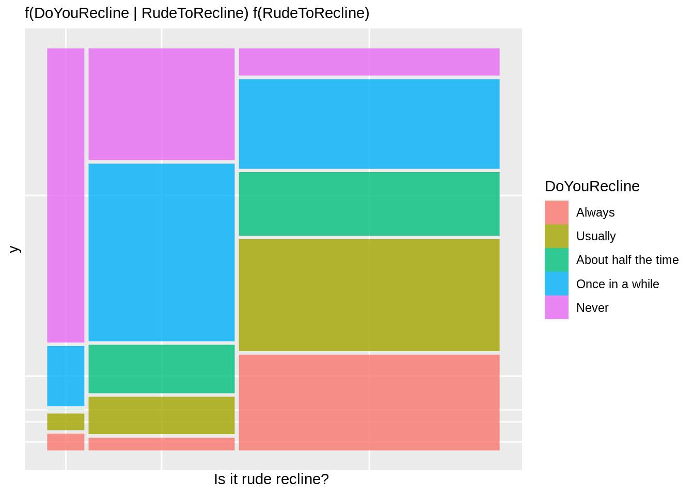
ggplot(data = fly) +
geom_mosaic(aes(x = product(RudeToRecline, DoYouRecline), fill=DoYouRecline), na.rm=TRUE) + labs(x = "" , y = "Is it rude recline? ", title='f(DoYouRecline | RudeToRecline) f(RudeToRecline)') + coord_flip() + theme(plot.title = element_text(size = rel(1)))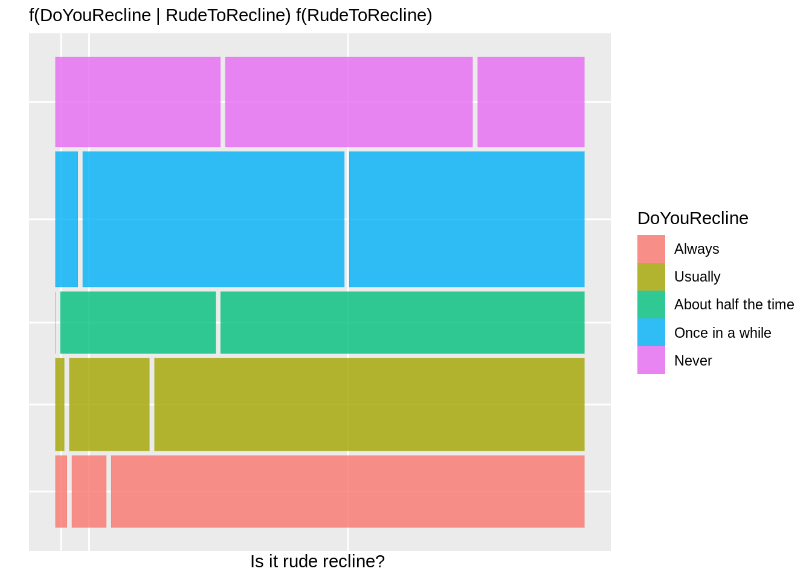
44.3.5.6 geom_mosaic的其他特征
geom_mosaic独有的参数。
- divider: 用于声明要使用的分区的类型。
- offset：设置第一条spine之间的空间。
44.3.5.7 Divider function. 分割类型。
每个部分有四个选项。
- vspine：宽度不变，高度可变。
- hspine：高度不变，宽度可变。
- vbar：高度不变，宽度不同。
- hbar：宽度不变，高度不同。
hbar <- ggplot(data = fly) +
geom_mosaic(aes(x = product(FlightFreq), fill=FlightFreq), divider="hbar", na.rm=TRUE) + labs(x=" ", title='divider = "hbar"')
hspine <- ggplot(data = fly) +
geom_mosaic(aes(x = product(FlightFreq), fill=FlightFreq), divider="hspine", na.rm=TRUE) + labs(x=" ", title='divider = "hspine"')
vbar <- ggplot(data = fly) +
geom_mosaic(aes(x = product(FlightFreq), fill=FlightFreq), divider="vbar", na.rm=TRUE) + labs(y=" ", x="", title='divider = "vbar"')
vspine <- ggplot(data = fly) +
geom_mosaic(aes(x = product(FlightFreq), fill=FlightFreq), divider="vspine", na.rm=TRUE) + labs(y=" ", x="", title='divider = "vspine"')
hbar
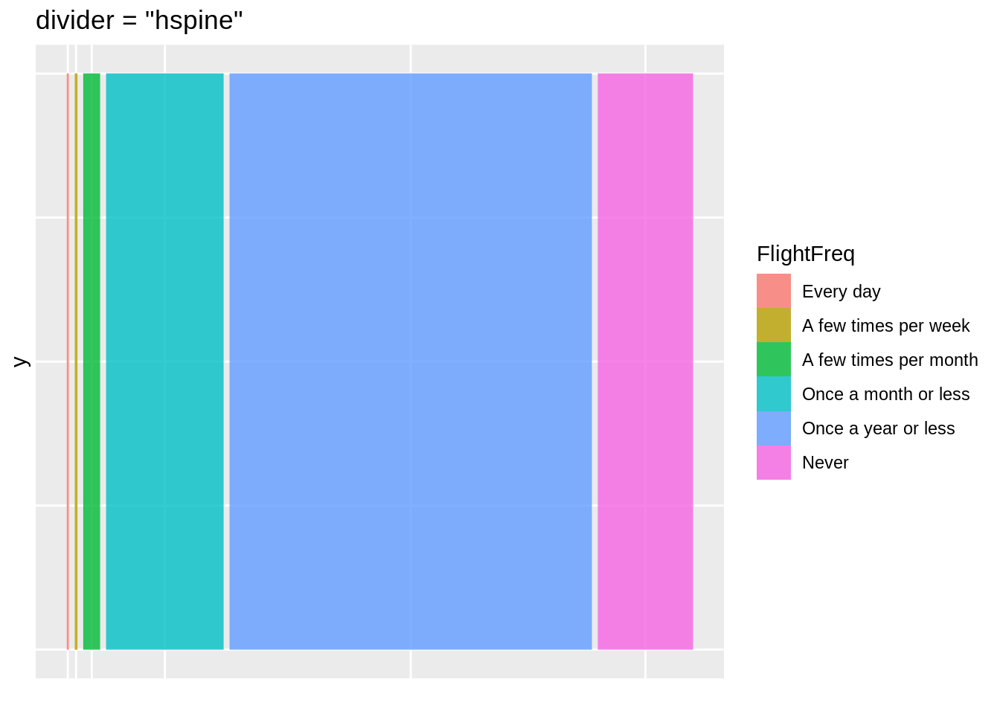

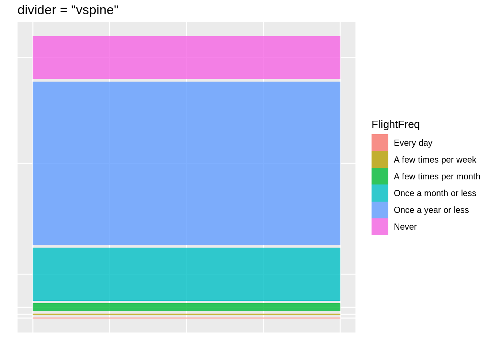
44.3.5.8 使用一个或多个变量进行分区
- mosaic()
- 默认
- 将在交替的方向使用spine
- 从横向的spine开始
- mosaic(“v”)
- 从竖向spine开始，然后交替进行。
- ddecker()
- 选择n-1个水平spine，并以竖向spine结束
- 定义每种类型的分区
- c(“hspine”、“vspine”、“hbar”)
h_mosaic <- ggplot(data = fly) +
geom_mosaic(aes(x = product(FlightFreq, Gender, Region), fill=FlightFreq), na.rm=T, divider=mosaic("h")) +
theme(axis.text.x=element_blank(), legend.position="none") +
labs(x=" ", title='divider= mosaic()')
v_mosaic <- ggplot(data = fly) +
geom_mosaic(aes(x = product(FlightFreq, Gender, Region), fill=FlightFreq), na.rm=T, divider=mosaic("v")) +
theme(axis.text.x=element_blank()) +
labs(x=" ", title='divider= mosaic("v")')
doubledecker <- ggplot(data = fly) +
geom_mosaic(aes(x = product(FlightFreq, Gender, Region), fill=FlightFreq), na.rm=T, divider=ddecker()) +
theme(axis.text.x=element_blank()) +
labs(x=" ", title='divider= ddecker()')
h_mosaic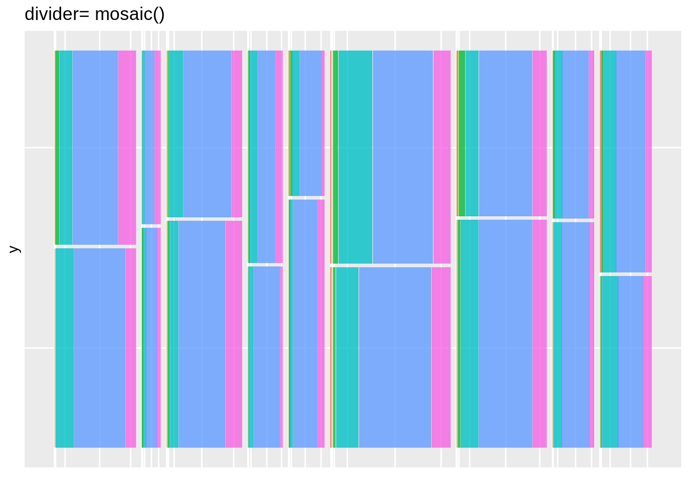
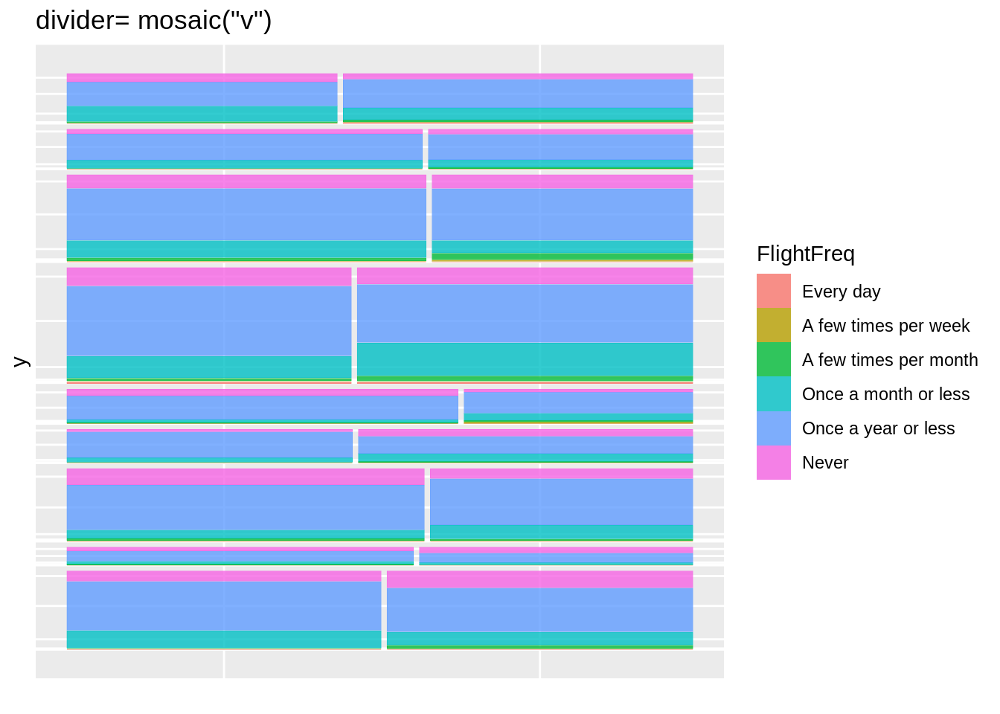
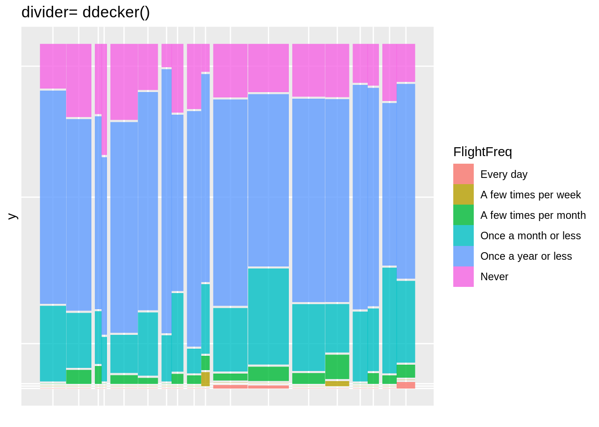
mosaic4 <- ggplot(data = fly) +
geom_mosaic(aes(x = product(FlightFreq, Gender, Region), fill=FlightFreq), na.rm=T, divider=c("vspine", "vspine", "hbar")) +
theme(axis.text.x=element_blank()) +
labs(x=" ", title='divider= c("vspine", "vspine", "hbar")')
mosaic5 <- ggplot(data = fly) +
geom_mosaic(aes(x = product(FlightFreq, Gender, Region), fill=FlightFreq), na.rm=T, divider=c("hbar", "vspine", "hbar")) +
theme(axis.text.x=element_blank()) +
labs(x=" ", title='divider= c("hbar", "vspine", "hbar")')
mosaic6 <- ggplot(data = fly) +
geom_mosaic(aes(x = product(FlightFreq, Gender, Region), fill=FlightFreq), na.rm=T, divider=c("hspine", "hspine", "hspine")) +
theme(axis.text.x=element_blank()) +
labs(x=" ", title='divider= c("hspine", "hspine", "hspine")')
mosaic7 <- ggplot(data = fly) +
geom_mosaic(aes(x = product(FlightFreq, Gender, Region), fill=FlightFreq), na.rm=T, divider=c("vspine", "vspine", "vspine")) +
theme(axis.text.x=element_blank()) +
labs(x=" ", title='divider= c("vspine", "vspine", "vspine")')
mosaic4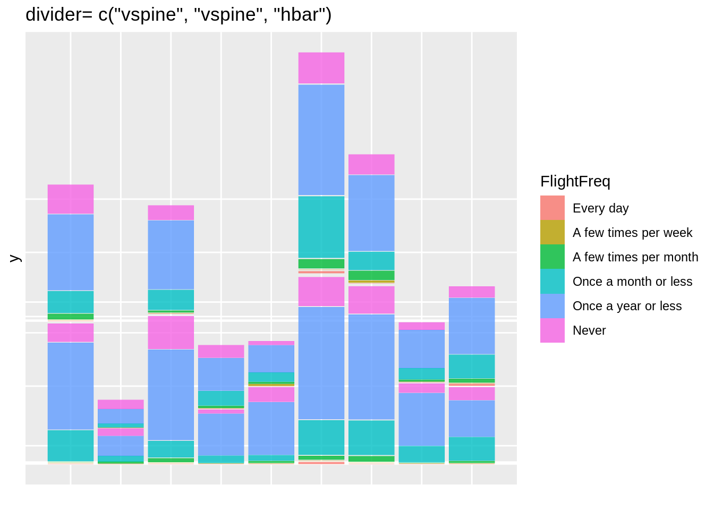
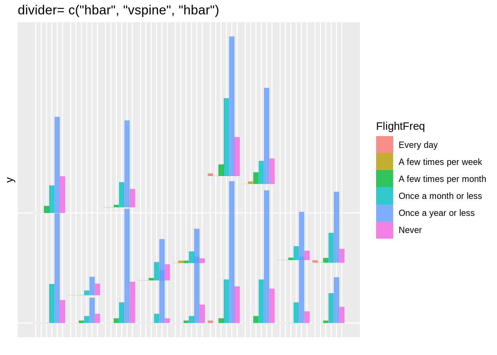
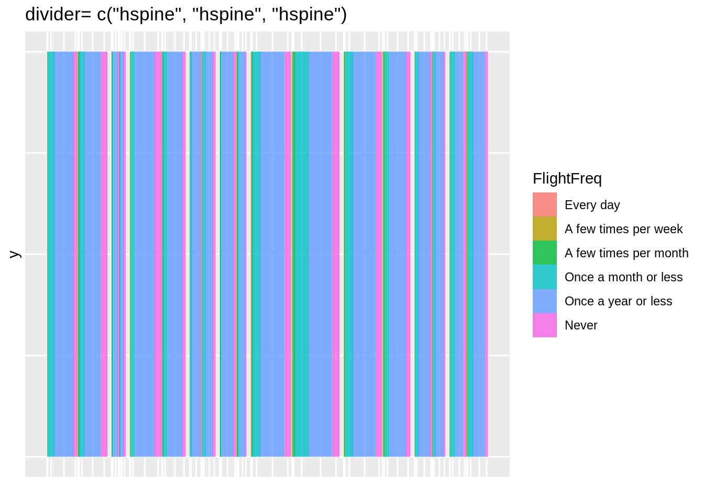

44.3.5.9 geom_mosaic: offset
offset。设置第一条spine之间的空间大小
- 默认值default=0.01
- 分区之间的空间会随着层数的增加而减小。
44.3.5.10 调整offset
offset1 <- ggplot(data = fly) +
geom_mosaic(aes(x = product(FlightFreq, Region), fill=FlightFreq), na.rm=TRUE) + labs(x="Region", y=" ", title=" offset = 0.01")
offset0 <- ggplot(data = fly) +
geom_mosaic(aes(x = product(FlightFreq, Region), fill=FlightFreq), na.rm=TRUE, offset = 0) + labs(x="Region", y=" ", title=" offset = 0")
offset2 <- ggplot(data = fly) +
geom_mosaic(aes(x = product(FlightFreq, Region), fill=FlightFreq), na.rm=TRUE, offset = 0.02) + labs(x="Region", y=" ", title=" offset = 0.02")
offset1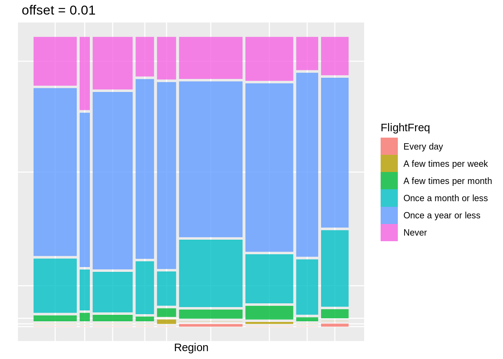
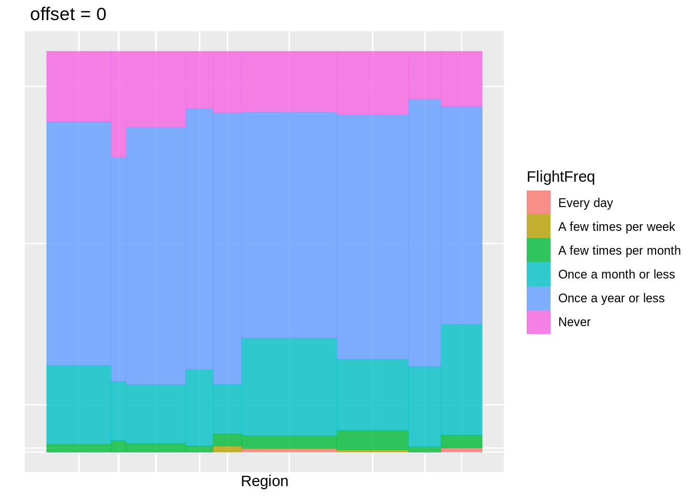
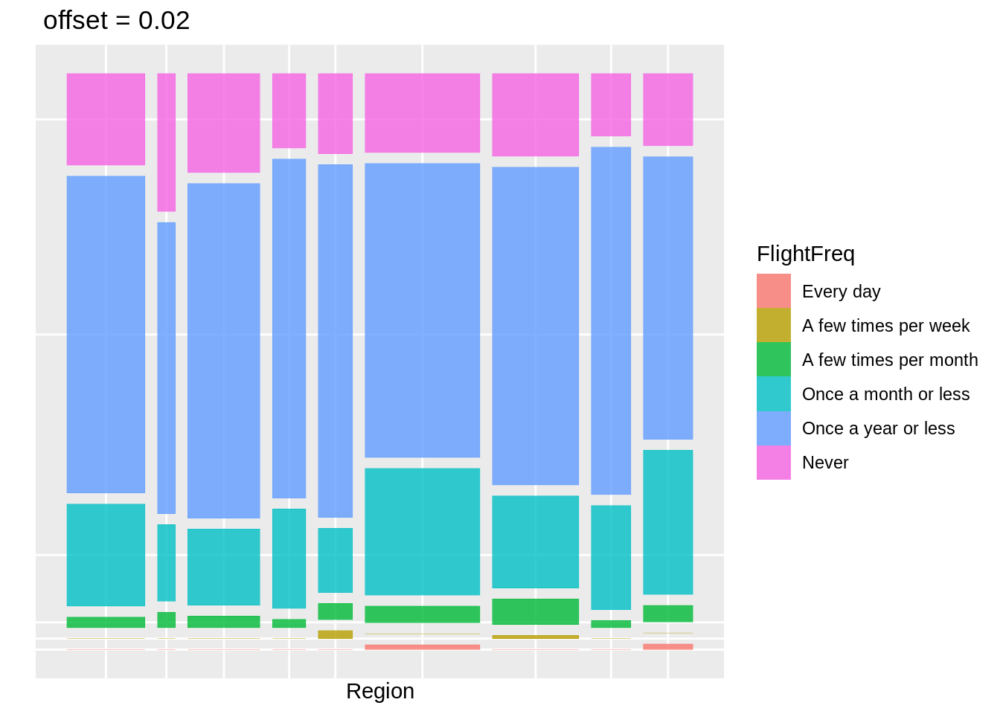
44.3.6 参考文献
Sandra D. Schlotzhauer (1 April 2007). Elementary Statistics Using JMP. SAS Institute. p. 407. ISBN 978-1-59994-428-9.
New Techniques and Technologies for Statistics II: Proceedings of the Second Bonn Seminar. IOS Press. 1 January 1997. p. 254. ISBN 978-90-5199-326-4.
Michael Friendly (1 January 1991). SAS System for Statistical Graphics. SAS Institute. pp. 512–. ISBN 978-1-55544-441-9.
SAS Institute (6 September 2013). JMP 11 Basic Analysis. SAS Institute. pp. 251–. ISBN 978-1-61290-684-3.
Martin Theus; Simon Urbanek (23 March 2011). Interactive Graphics for Data Analysis: Principles and Examples. CRC Press. ISBN 978-1-4200-1106-7.
Mosaic plot. (2019, June 16). Retrieved November 04, 2020, from https://en.wikipedia.org/wiki/Mosaic_plot